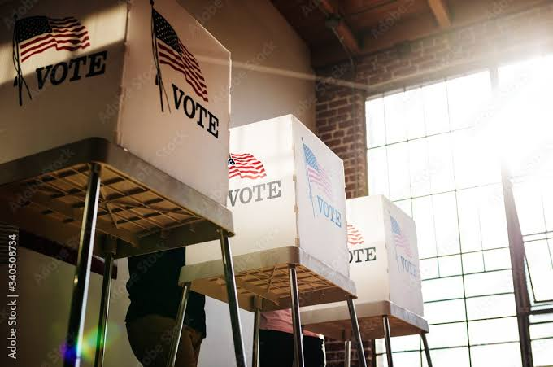

Why Voting Matters

Every Vote Makes a Difference
It can be easy to think that one vote does not matter when millions of people participate in an election. However, every election is made up of individual decisions from people just like you. Your vote is one part of a much larger picture, and choosing not to vote means giving up your opportunity to have a say in the future.
Imagine if everyone who believed their single vote mattered decided to participate. One person voting becomes two, two becomes ten, and ten can become hundreds or even thousands of additional votes. When people come together and make their voices heard, those individual decisions turn into a much stronger collective voice.
Elections are often decided by the combined choices of many individuals. In close races, even a small number of votes can make a difference in the final outcome. Your vote may not decide an election by itself, but it contributes to the result and helps represent what you believe in.
Voting is about more than choosing a candidate. It is about participating in your community, supporting the issues that matter to you, and helping shape the future. Never underestimate what can happen when people decide that their voices deserve to be heard.